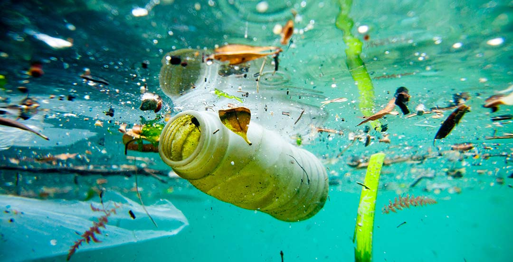

水污染与水什么来着
大标题，可以用英文，突显逼格，在放个队伍信息之类的
content-1 世界地图 介绍概况
假装逼格很高的一段话
这里就是内容了啦这里就是内容了啦这里就是内容了啦这里就是内容了啦这里就是内容了啦这里就是内容了啦这里就是内容了啦这里就是内容了啦

content-2 放点图表什么的
假装逼格很高的一段话
这里就是内容了啦这里就是内容了啦这里就是内容了啦这里就是内容了啦这里就是内容了啦这里就是内容了啦这里就是内容了啦这里就是内容了啦
content-3 放点图表什么的